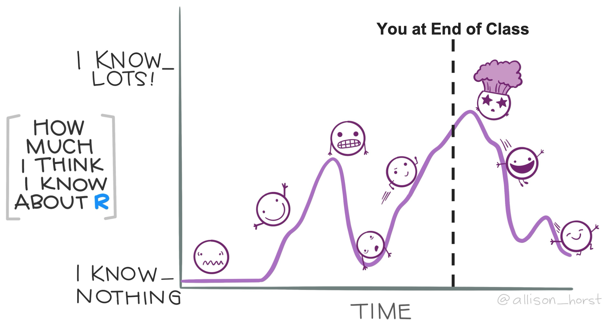
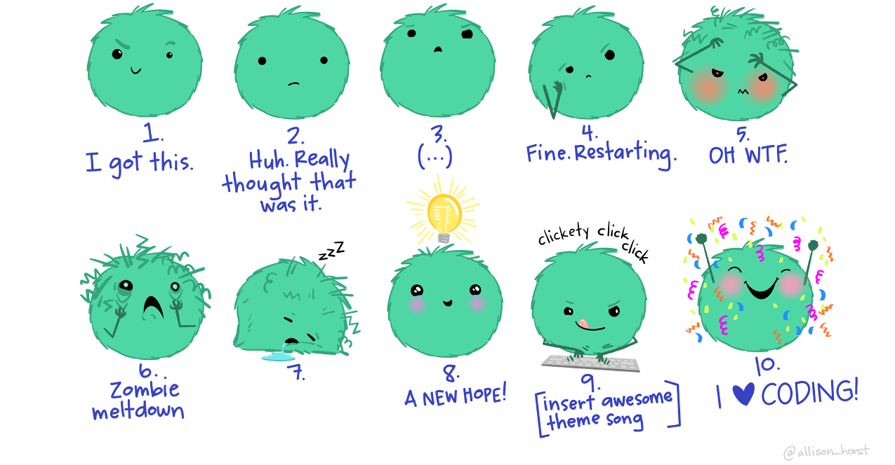
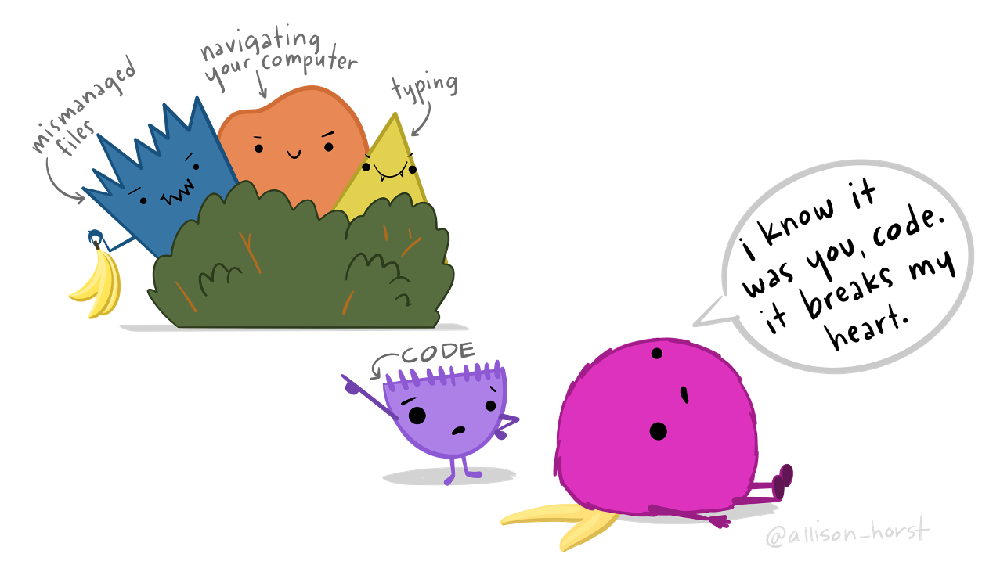
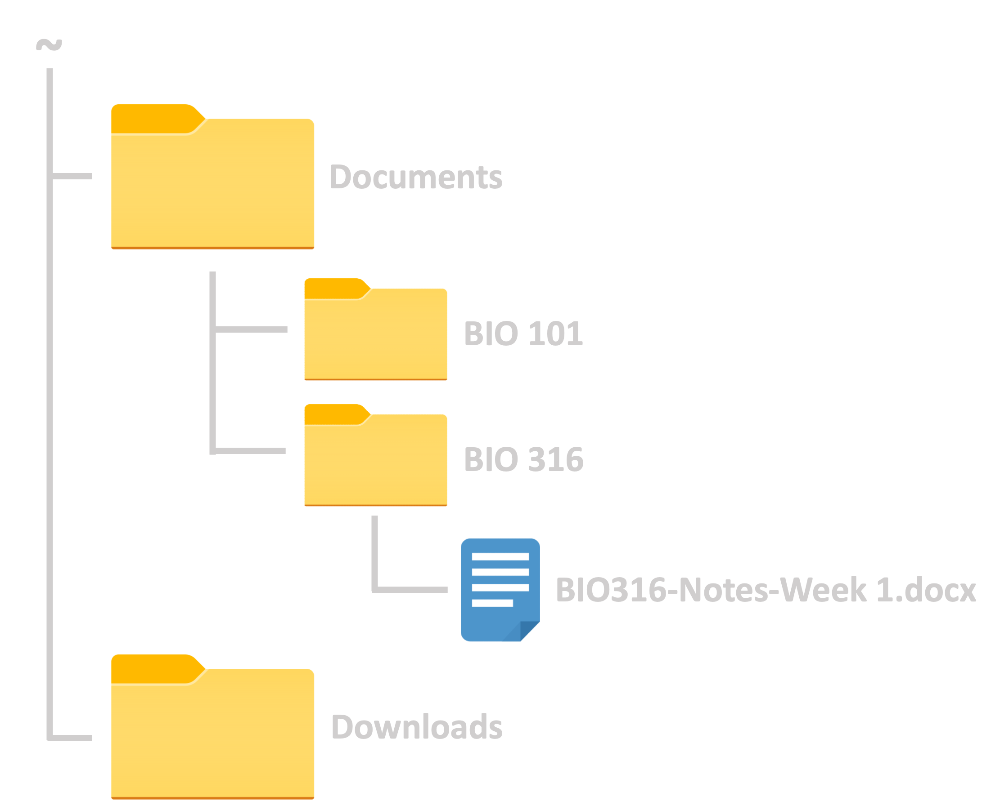

Intro to Data Science
Lecture 1 – Data Science Fundamentals
A Guide to Your Process
Scheduling
Learning Objectives
Practice
Supporting Information
Class Discussion
Today’s Plan
- Introductions
- Data Science Background
- Why R?
- Problem Solving Tips (for Coding)
- Computer File Paths
Today’s Learning Objectives
After today’s session you will be able to:
- Define “data science”
- Explain why the course is taught in R
- Identify useful code problem solving techniques
- Demonstrate comprehension of computer file paths
Introductions
Tell me a bit about yourselves!
What is your preferred name?
What year are you in school?
What’s a fun fact that brings you joy?
Introductions (Continued)
Why did you sign up for the course?
What skill(s) are you most excited to learn?
What previous coding / data science experience do you have?
- Absolutely fine if this is your first foray into data science!
My Goal for You

Data Science Definition
Data science combines programming and statistics with subject matter expertise to identify patterns and insights hidden in data
Why is this Course Taught in R?
R is a programming language that is awesome for environmental data scientists
Benefits of R:
| Free | Reproducible | Accessible | Popular | Versatile |
|---|---|---|---|---|
R’s Popularity
R Data Science Value
Reproducibility
- R is written in “scripts”
- Scripts = step-by-step instructions
- Scripts can be run by any R user
- Allows perfect replication of process
- Programs that require clicking buttons are not (as) reproducible
- Would depend on accompanying written/verbal instructions
Collaboration
- R scripts can be co-developed!
- They can then be shared like a paper draft
- Many tools exist to formalize sharing
- We’ll cover one in this course!
- Unscripted programs would again require written/verbal instructions
- Then hoping they click the right buttons in the right way
Temperature Check
How are you Feeling?

Problem Solving in R

Problem Solving Methods
- Problem solving is an important life skill generally
- Also useful for data science!
- Let’s discuss some useful strategies:
- ‘Rubber duck’ method
- Google (seriously!)
- Teamwork
- Take a break
- Whatever methods you use!
Method 1: Rubber Duck
- Get rubber duck / small object
- Explain each line of your code to the duck
- Go into as much detail as possible
- Re-read lines carefully as you explain
- You’ll catch typos/errors that you had missed!
- Why “rubber duck” instead of “friend”?
- Because it would likely be a dull experience for your friend
Method 2: Google

- This is a serious suggestion!
- Google is truly an amazing resource for this
- There are forums where where people discuss code issues
- StackOverflow, GitHub Discussions, etc.
- If you get an error:
- Copy the entire error message
- Paste it into Google
- Check the first few links to see how others solved that issue
Google Tips
- Use a plus sign (
+) between search terms- E.g., “R + <error message text>
- When specific wording matters, use quotes!
- E.g., “I want results with exactly this phrase”
Method 3: Team Up!
- Group work is a classic method of problem solving
- Email/text classmates about errors you’re encountering
- Set up a weekly time to meet and work together
- Group work & assignments
- I really encourage you to work together to solve problems
- BUT assignments should be produced by you alone
- There are no group assignments in this course!
Method 4: Take a Break

Method 4: Take a Break
- Coding issue can be super frustrating
- Totally normal to feel this way
- If you are struggling to solve a problem, take a few minutes to step re-set
- Physically step away and do something active
- Do one of your hobbies for a few minutes
- Work on something else
- Return to the problem an hour or so later and try again!
Method 5: Yours!
- As students, you’re experienced problem solvers already!
- Code problems can likely be solved by the strategies you already use!
- How do you solve problems you encounter in other courses or at work?
Temperature Check
How are you Feeling?
Computer File Paths
- Computers store files in “folders”
- Folders can be nested inside other folders
- The name of all folders leading to a particular file is that file’s “file path”
- File path starts at the biggest folder (“top” folder) and ends at the file
- Each folder name is separated by slashes (
\or/)
- For example: ~ / Downloads / BIO316 Syllabus.pdf
File Path Example
What is the file path for the notes document in this image?

~ / Documents / BIO 316 / BIO316-Notes-Week 1.docx
Practice: File Paths
- Pick a file on your computer
- Not one in the “Downloads” folder (file paths are too short)
- What is that file’s path?
- Hint: ~ / … / … / …
- When you have it, show me the file and tell me its path
Upcoming Due Dates
Due before lab
Due ASAP
- Install R (see here)
- Install RStudio (see here)
- Read the syllabus (esp. point values + assignment descriptions)
Due by midnight
- Muddiest Point #1
Due before lecture
(By midnight)
- Read the British Ecological Society’s Reproducible Code Guide (p.1-12)